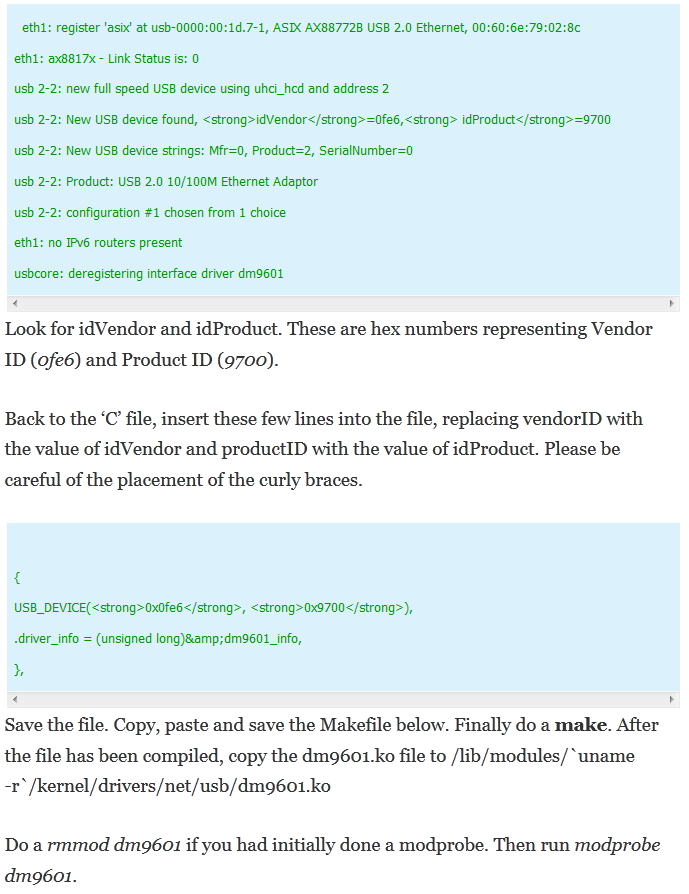

Intentionally Left Blank.
From
THIS web link I found some
examples on how to modify a driver module and replace it with existing driver. The driver is for a USB to LAN device from Kontron. Kernel
module name is
DM9601. The site says that the driver was too old, so they are going to modify the old driver. The issues may be
solved to new kernel, but I am document this for gathering knowledge for module development and management.

Here is the
Makefile.
##================================================================
## Davicom Semiconductor Inc. For DM9601 V0.00
## --------------------------------------------------------
## Description:
## Compile driver dm9601.c to dm9601.o
##
## Modification List:
## 09/05/2000 Fixed SMPFALGS wrong on smp & smp_mod
## 08/02/2000 Changed some description string & include file path
## 07/25/2000 Append smp_mod and changed some descriptions
## 01/25/2000 by Sten Wang
##================================================================
# Comment/uncomment the following line to disable/enable debugging
#DEBUG = y
# Add your debugging flag (or not) to CFLAGS
ifeq ($(DEBUG),y)
DEBFLAGS = -O -g # "-O" is needed to expand inlines
else
DEBFLAGS = -O2
endif
EXTRA_CFLAGS += $(DEBFLAGS) -I$(LDDINCDIR)
ifneq ($(KERNELRELEASE),)
# call from kernel build system
obj-m := dm9601.o
else
KERNELDIR ?= /lib/modules/$(shell uname -r)/build
PWD := $(shell pwd)
default:
$(MAKE) -C $(KERNELDIR) M=$(PWD) LDDINCDIR=$(PWD)/../include modules
endif
clean:
rm -rf *.o *~ core .depend .*.cmd *.ko *.mod.c .tmp_versions
depend .depend dep:
$(CC) $(EXTRA_CFLAGS) -M *.c > .depend
ifeq (.depend,$(wildcard .depend))
include .depend
endif
In my case on HP laptop arch linux 3.12.7 version, the command
dmesg | tail -20 shows that the device name is
Devicom DM9601 USB Ethernet
usbcore: registered new interface driver dm9601
usbcore: registered new interface driver sr9700
So 2 driver is loaded when the device plugged in. Also found that the module files are in the form of compressed format in
/lib/modules/3.12.7-2-ARCH/kernel/drivers/net/usb
directory. The files are :
usbnet.ko.gz
dm9601.ko.gz
sr9700.ko.gz
In my Arch linux 3.12.7 it works with minimum error messages. Initially it shows an error message like "kevent may drop". Later I connect the device to
Internet with following commands :
Release eth0 addresses -
ip addr flush dev eth0
Now setup the eth1 device -
ip link set dev eth1 up
ip addr add 27.147.234.151/28 broadcast 27.147.234.151 dev eth1
ip route add default via 27.147.234.145
Then I ping to google and also made some 200MB download as well.
New Topics.
Site Address